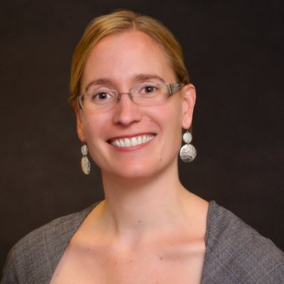

<div class="container">
    <div class="row">
        <div id="speaker-detail" class="col-lg-6 col-lg-offset-3">
            <div class="row">
                <button title="Close (Esc)" type="button" class="mfp-close">×</button>
                <div class="col-md-4 col-lg-4">
                    
                    <br />
                </div>
                <div class="col-md-8 col-lg-8">
                    <h2>Lauren Celano<br></h2>
                    <h3>Founder and CEO, Propel Careers</h3>
                    <p>Lauren Celano is the co-founder and CEO of Propel Careers, a life science search and career development firm focused on connecting talented individuals with entrepreneurial life sciences companies. Propel works with current leaders and actively cultivates future leaders through full time placement, internships, mentoring, career coaching, and networking. Propel Careers is engaged across all areas of life sciences, including therapeutics, medical devices, healthcare IT, diagnostics, consulting, venture capital, and investment banking. Prior to Propel Careers, Lauren was a senior account manager for SNBL USA where she worked with emerging biotech companies in Europe, Asia, and the US to help characterize and advance their drug molecules. Prior to SNBL USA, she held business development positions with Aptuit and Quintiles, where she focused on IND enabling studies to advance therapeutics from discovery into the clinic. Earlier in her career, Lauren held positions as a marketing manager and account manager at Absorption Systems, where she was responsible for managing life sciences companies in the northeastern United States. She has a B.S. in Biochemistry and Molecular Biology from Gettysburg College and an MBA with a focus in the health sector and entrepreneurship from Boston University. Lauren is on the Board of MassBioEd, the Advisory Board of the Boston University School of Public Health Pharmaceuticals Program, and the Advisory board for Endicott College Boston. She also serves on the Gettysburg College Entrepreneurial Fellowship Advisory Council and the programming committee of the Capital Network.</p>
                </div>
            </div>
        </div>
    </div>
</div>
